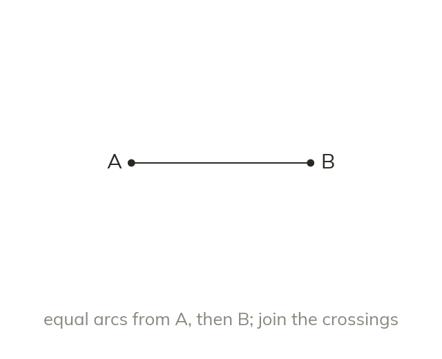
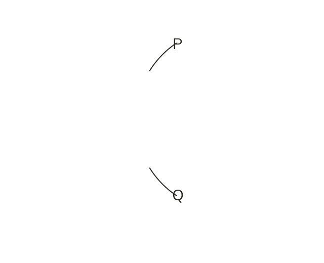

Equal arcs from both ends
Draw equal arcs from A and from B, wider than half of AB. Join the two crossings, P and Q. PQ cuts AB in half at right angles.
Arcs of one width, more than half of AB, are drawn from A and then from B, crossing at P and Q. The line through P and Q is the perpendicular bisector: it cuts AB in half at right angles.Less than half of AB, and the arcs from the two ends would never meet. Keep the same width for both ends. P and Q are each as far from A as from B.